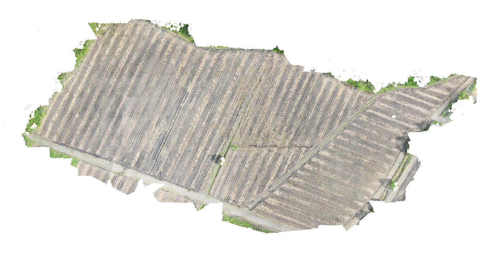
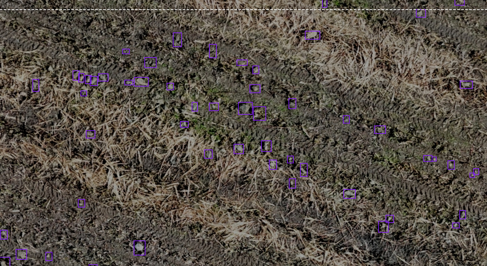

03 — De imágenes a datos de entrenamiento
Del campo al modelo de IA
QGIS
ORTOMOSAICO
ETIQUETADO
DEEP LEARNING

01
Captura con Drone
El VANT sobrevuela el cultivo tomando fotografías aéreas solapadas en alta resolución RGB.
→

02
Ortomosaico en QGIS
Las fotos se unen en un ortomosaico georreferenciado, visualizado y analizado con QGIS.
→

03
Segmentación en Polígonos
El ortomosaico se divide en polígonos que delimitan regiones de interés para su análisis.
→

04
Etiquetado para IA
Cada polígono se etiqueta (maleza, piedra, plaga) construyendo el dataset de entrenamiento.
💡
Este flujo convierte datos crudos del campo en un dataset estructurado y etiquetado — base fundamental para entrenar modelos de segmentación semántica con Deep Learning sobre cultivos reales..